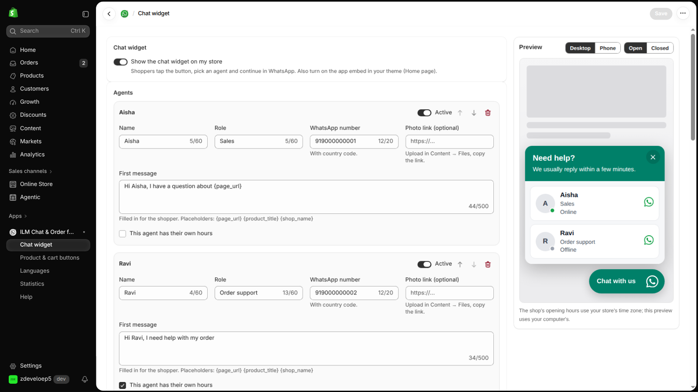

Chat widget
2.1 Turn the widget on
Open the Chat widget page. Turn on Show the chat widget on my store. Shoppers tap the button, pick an agent and continue in WhatsApp.

2.2 Look
- Position: Bottom right or Bottom left.
- Icon: WhatsApp, Chat bubble or Headset.
- Button colour: the colour of the button.
- Icon and text colour: the colour of the icon and text.
- Button size: from 40 to 80 px.
- Distance from the side: from 0 to 200 px.
- Distance from the bottom: from 0 to 200 px.
- Button text (computers): up to 60 characters. Phones show the icon only.
- Chat window title: up to 80 characters.
- Chat window text: up to 160 characters.
Tip If the two colours are hard to read together, the app shows a warning. Use at least 4.5:1, for example #008069 with white.
2.3 Greeting message
Turn on Show a greeting bubble to show a short message once per visit, next to the button.
- Greeting: up to 200 characters.
- Show after: from 0 to 120 seconds.
- Or after scrolling: from 0 to 100 % of the page. 0 means do not wait for scrolling.
2.4 Business hours
Turn on Use business hours. This uses your store's time zone. Agents with their own hours use those.
- Outside business hours: Keep the widget and show the offline message, or Hide the widget.
- Offline message: up to 200 characters.
2.5 Where it shows
- Devices: Computers and phones, Phones only, or Computers only.
- All pages: show the widget on every page.
- Pages: pick single pages such as Home page, Product pages, Collection pages, Cart page, Search results, Blog posts, Other pages (About, Contact …) or Everything else.
- Also show on links that contain: one per line. Part of the address is enough.
- Never show on links that contain: one per line.
2.6 Only for some products
This part is optional. Click Choose products or Choose collections. Then product pages show the widget only for those products, and collection pages only for those collections.